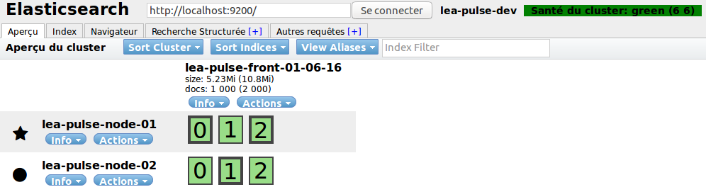
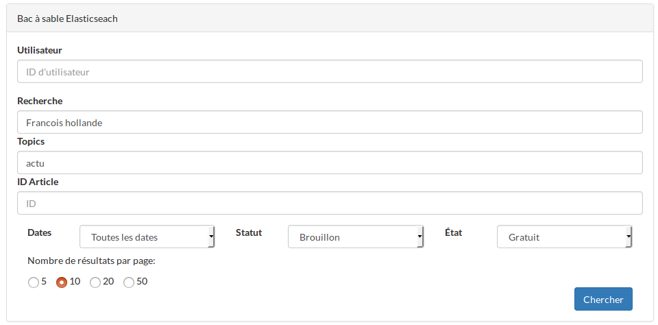
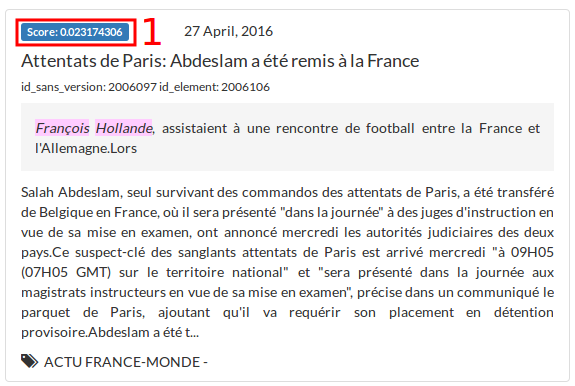
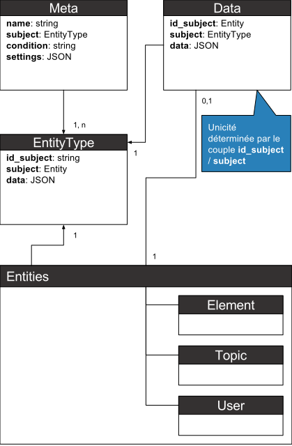
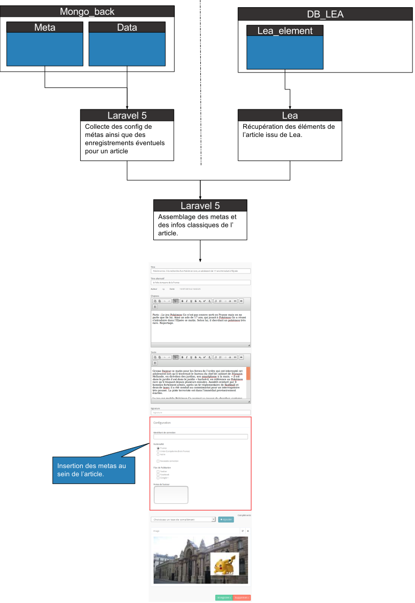
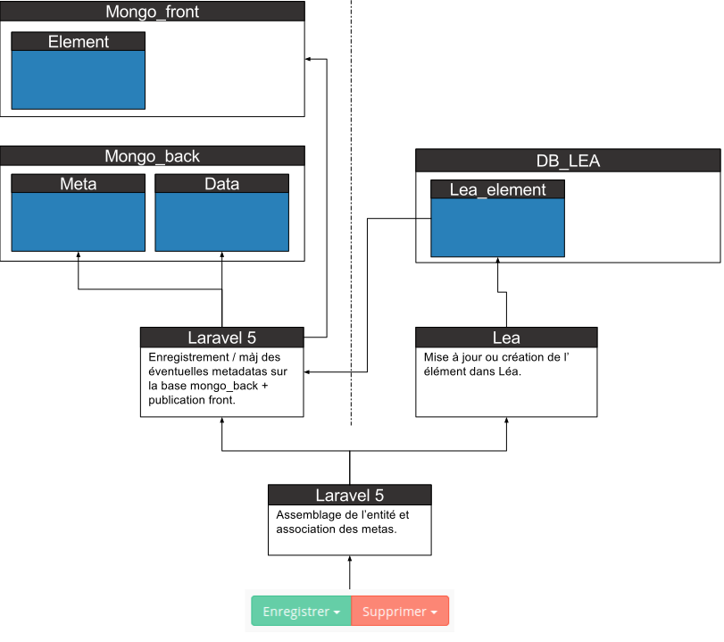

BackOffice Laravel5
Nous vous recommandons d'avoir fait les premiers tutoriaux Laravel5 avant de poursuivre Tuto First Start à SDV vous pouvez aussi consulter les vidéos laracasts
Le backoffice Laravel5 fait le lien entre les services du BO Angular2 et du BO Legacy. Il permet également les requêtes sur les collection de MongoDB.
Sommaire
Modules
Pour ajouter des modules à votre installation de laravel, ceux-ci devront etre dans app/Modules et seront loadé en psr4. Il faudra simplement faire un composer dump-autoload pour qu'il soit pris en compte.
Vous pouvez inclure aussi des routes, grace au fichier app/Http/modules.routes.php
Commands
Imports
Les scripts d'import doivent fonctionner en mode authentifié, pour cela il est nécessaire de connaitre un user (en général 'import').
use Illuminate\Support\Facades\Auth;
use ApiPulse\Models\Lea\sfGuardUser;
...
$user_import = sfGuardUser::where('username','import')->first();
//on s'authentifie en tant que ce user
Auth::login($user_import);
//plus tard dans le script on pourra retrouver ce user grâce à:
$user = Auth::user();
Publication
La publication est basé sur le systeme d'evenement de Laravel et sur les files de Redis.
Principe de base, lors de l'enregistrement d'un article (c'est aussi valable pour les blocs, colonnes etc..):
- On mets à jours les données back de l'article (les principales dans mysql, les metas dans mongo)
- On insere l'ID de cet article dans une file redis (dans Legacy avec SdvRedisClient et dans L5 avec Predis)
- Ceci mets fin à la partie synchrone de l'enregistrement
- En paralélle, un daemon lancé avec "artisan redis:subscribe
" va dépiler cette file - Pour chaque ID récupérer, il va créer un evenement d'une classe spécial lié à cette file
- Chacun de ces evenements est lié à un ou plusieurs listeners, qui vont chacun etre exécuté
- Les listeners définissent quels traitements sont à faire pour la publication (ceci permet de pouvoir definir plusieurs réaction pour une seul evenement)
Evenements
Les évenements sont définies dans ApiPulse/Events, ou dans des modules Modules/Nom_Module/Events.
Les listeners sont dans ApiPulse/Listeners, ou dans des modules Modules/Nom_Module/Listeners.
Les liaisons entre les 2 sont dans Providers/EventServiceProvider.php ou dans les modules Modules/Nom_Module/Providers/EventServiceProvider.php.
Controllers
Config
Le controller config permet de stocker des infos de configuration dans la collection config de la base lea_pulse_back.
Deux fonctions sont définies dans le controller:
- get($type) : permet de récupérer le document dont le type correspond
- set($type, Request $req) : permet de créer ou mettre un jour un document correspondant au type donné.
Topic
Le controller de Topic permet d'accéder aux informations concernant les topics en lecture.
On peut :
- accéder à la liste des topics en entier (avec une mise en cache des données) via getTopicList().
- récupérer les informations d'un seul topic via getTopic($id).
- récupérer un liste paginée d'articles liés au topic demandé via getTopicElements($id, $type = null, $perPage=20)
- $id correcpond à l'identifant de la hiérarchie,
- $type correcpond à la version des articles voulus (en ligne, brouillon, ...),
- $perPage est le nombre d'article qui nous sont retourné par page.
- récupérer la configuration du topic et les veleurs associées pour le paramétrage de celui-ci via getMetas($id).
Services
Cache
Il est possible de mettre en cache certaines données de la base MySQL dans la base Mongo. Le fonctionnement de la fonction get() du service de cache est de chercher des données récentes dans la collection de cache, de les mettre à jour si la date de dernier update du contenu n'est pas suffisamment récente ou de créer un nouveau document si le cache n'existe pas.
La syntaxe est la suivante:
use ApiPulse\Services\cacheService as Cache;
Cache::get($id, $max_minute, $request);
- $id: String - Identifiant du document dans lequel chercher, mettre à jour ou créer le cache.
- $max_minute: Int - Nombre de minutes maximum de dernière update du cache avant qu'il ne soit considéré comme périmé (ce qui entraine une nouvelle requête MySQL)
- $request: Request - Requête à effectuée sur la base MySQL (dans le cas de création/mise à jour)
Exemple:
Cache::get("TopicList", 5, Topic::select('id_hierarchie', 'titre', 'path', 'uri'));
Elasticsearch
Installation et Configuration
Docker
L’instance Elasticsearch (‘ES’ pour la suite de la documentation) docker est basée sur l’image officielle 2.3 Le docker file est dans /data/builds/elasticsearch Les configs (générale et logs) se situent dans le sous-dossier ‘conf’.
Une fois le docker-compose lancé le conteneur doit être mappé comme suit : 0.0.0.0:9200->9200/tcp, 9300/tcp et doit porter le nom suivant : lea_pulse_elasticsearch
État du serveur ES
Pour vérifier que le serveur répond bien, il suffit d’exécuter : ‘curl localhost:9200’. Ou simplement d’y accéder via votre navigateur préféré.
{
name: "lea-pulse-node-01",
cluster_name: "lea-pulse-dev",
version:
{
number: "2.3.3",
build_hash: "218bdf10790eef486ff2c41a3df5cfa32dadcfde",
build_timestamp: "2016-05-17T15:40:04Z",
build_snapshot: false,
lucene_version: "5.5.0"
},
tagline: "You Know, for Search"
}
Si la réponse ressemble à la sortie ci dessus alors le serveur répond correctement. Si les requêtes simples ES peuvent être effectuées en get via curl ou via un navigateur nous utiliserons l’extension ‘Sense’ de Chrome pour les requêtes avancées.
Clusters, nodes, shards et indices
L’écosystème ES foisonne de termes très spécifiques, sans entrer dans les détails nous listerons les principaux avant de présenter le fonctionnement global d’ES.
-
Node : Un node est un instance Elasticsearch. Le plus simple et de le visualiser comme un serveur dédié.
-
Cluster : Un cluster est un ensemble de nodes. Cela permet de scaler horizontalement ES qui est par nature une application d’architecture distribuée. Un node peut être ‘master’ ou ‘worker’ Le master s’occupe du CRUD d’index (index au sens ‘base de données’ ES) ainsi que de la gestion d’ajout retrait de node au sein du cluster. Il est important de noter qu’une fois un cluster en place, l’attribution master / worker se fait de façon automatique. En d’autres termes si le node master tombe, le système attribuera automatiquement ce rôle à un autre node. Le node master permet aussi d’effectuer des recherches ES sur les documents indexés. Une application ES peut donc n’avoir qu’un seul node.
-
Shard : Un shard est une simple instance de Lucène au sein d’un node. On parle aussi de ‘worker de bas niveau’. Il n’y a pas grand-chose à retenir de ces éléments dans un premier temps si ce n’est qu’un shard peut être de type primaire (primary) ou réplica (replica). c’est dans un shard primaire que sont stockés les documents indexés, un shard réplica n’est qu’une copie en lecture seule d’un shard primaire pour assurer la pérennité des données lors du crash d’un node. Par défaut ES créé 5 shards par node. Lors de la création d’un index on peut modifier ce chiffre.
-
Index (plur. indices) : L’index (au niveau d’un instance ES) est l’équivalent d’une base de données dans le modèle relationnel. Des documents de différents types (articles, commentaires, utilisateurs) peuvent tout à fait être indexés dans un même index.
Pour consulter l’état d’un cluster ils suffit de s’y connecter via http://localhost:9200/_plugin/head/. (Plugin ajouté à l’image ES).

- Cluster : lea-pulse-dev
- Indices : 1 seul index ici, lea-pulse-front-01-06-16
- Nodes : lea-pulse-node-01 (master) lea-pulse-node-02 (worker)
- Shards : 3 shards primaires (encadrés en vert gras) et 3 shards de type réplica.
- Autres infos, l’index pèse 10,8M et 1 000 documents sont indexés.
Indexation et mapping
Il est important de ne pas confondre l’indexation Elasticsearch (équivalent à une base de données) avec l’indexation de documents et de champs.
Indexation ES
Un index est pré-configuré dans bo_api_l5/config/elasticsearch.php. On indique entre autre le nom, le nombre de shards primaires et le nombre de shards réplicas. Inutile d’assigner des réplicas dans le cas d’un cluster à un seul node, ces derniers ne pourront pas être assignés. Note importante : 1 réplica ne signifie pas un shard de type réplica mais 1 x le nombre de shards primaires. C’est à dire que si on indique 3 shards primaires et 2 replicas, le système tentera d’affecter 6 shards de type réplica. Il faudra donc au moins 3 nodes pour tout assigner.
Indexation Des documents
Pour l’indexation des documents, il existe deux méthodes. L’indexation ‘Fast & Furious’ et l’indexation ‘Délicate’ (ce nommage n’implique que l’auteur de cette documentation). Dans le premier cas, on envoie simplement une représentation json d’un objet que l’on souhaite indexer et ES s’occupe de tout. Exemple (inspiré de la doc officielle)
PUT /lea-pulse-front-01-06-16/employee/1
{
"first_name" : "John",
"last_name" : "Smith",
"age" : 25,
"about" : "I love to go rock climbing",
"interests": [ "sports", "music" ]
}
- lea-pulse-front-01-06-16: Nom de l’index sur lequel on souhaite envoyer le document.
- Employee: type de document.
- 1: id du document, le plus simple étant en règle générale de récupérer celui de la base de données de laquelle est issu le document.
Et baaam le document est indexé ! Pas besoin de se prendre la tête sur les champs envoyés et leur interprétation lors du stockage ou lors de la recherche. On se moque du Mapping, ES le fait pour nous.
Le problème est évidement que pour une utilisation fine et optimale de ES, cette méthode ne suffit pas. Prenons un exemple : Un article A qui traite de la crise financière en Europe se verra associer à une rubrique ‘Crise financière’. Si un internaute cherche ‘crise’ ou ‘finance’, alors on s’attend à ce que toute association avec ‘Crise financière’ pondère le score de pertinence vers le haut. Cela ne peut se faire que si le champ est indexé comme étant du texte (analysé, parsé, tokenizé selon les spécificités propres à la langue de l’utilisateur qui effectue la recherche). Le mapping automatique sélectionnera sans doute un tel comportement. En revanche, si dans un formulaire un minimum dynamique, l’utilisateur ne choisit que les articles de type en lien avec ‘Crise financière’ alors pour dispenser à la volée le nombre d’articles concernés, (la ou en sql on imagine where rubrique = ‘Crise financiere’) l’indexation full-text n’est absolument pas adaptée. Il faut dans ce cas un mapping particulier qui permet d’indexer un champ de 2 façons différentes, une pour la recherche texte, l’autre pour la recherche filtrée par des critères précis. Plus d’infos sur le mapping à cette adresse : https://www.elastic.co/guide/en/elasticsearch/guide/current/mapping-intro.html
Connexion Laravel 5 / Elasticsearch
-
Client Elasticsearch PHP: La connexion se fait par la librairie client PHP officielle de ES.
-
Provider: Le provider développé pour le bo_appi app/Providers/ElasticsearchServiceProvider.php se charge de l’instanciation du client en utilisant les paramètres de configuration. Ce provider permet aussi de bénéficier de l’injection de dépendance afin de simplifier son utilisation dans les controlers et repo de l’application Laravel.
-
Controller: Toutes les interactions avec ES doivent passer par le controller app/ApiPulse/Controllers/ESController.php.
-
Repository: Les requêtes et traitements avancés ES sont effectués dans le repo app/ApiPulse/Repositories/ElasticsearchRepository.php.
-
Service: Interface entre le client officiel et l’app Laravel.
-
Console: Les scripts de console sont situés dans app/Console/Commands. Liste des scripts esearch:
- esearch:*create-index: Création du ou des index décrits dans config/elasticsearch.php*
- esearch:*delete-index: Suppression d'un index (config/elasticsearch.php*)
- esearch:*populate*: Indexation d'éléments (en cours de dev)
- esearch:*update-index: Mise à jour d'un index (config/elasticsearch.php*)
Sandbox sur Laravel 5
Afin de faciliter les développements et les tests de requêtes déclenchées par les formulaires de recherche, une interface sur l’appli Laravel 5 est accessible.

Ce formulaire reprend peu ou prou celui de front Angular 2. Les données transmises en POST utilisent le même endpoint.

- 1: score de pertinence ES. Le rendu est modifiable dans ressources/elastic/search.blade.php.
Communication Laravel 5 / Elasticsearch
Toutes les communications avec ES se font en REST. Le CRUD sur les indices ES (config index + mapping), le CRUD sur les documents ES au sein d’un index et les recherches de document ‘You Know, for Search’ comme ils disent.
Ce qu’il faut donc retenir c’est qu’une fois un cluster et ses nodes en place, tout est entièrement gérable et paramétrable via L5 grâce à la lib client PHP.
Requetes DSL (Domain Specific Language): Il s’agit simplement d’un système de requête envoyées en JSON. Nous n’entrerons pas ici dans le détail des requêtes, la doc officielle le fera bien mieux. Nous retiendrons simplement que nous devrons mettre en place l’équivalent de la requête JSON attendue sous forme d’un tableau php indexé. Voici la structure de base que nous utilisons.
$params = [
#Index Sur lequel porte la requête.
'index' => env('ELASTICSEARCH_INDEX', 'lea-pulse-front-01-06-16'),
#Type de 'collection'.
'type' => 'element',
#Structure de base pour une requête avancée.
'body' => [
#offset
'from' => $from,
#nombre d’éléments max à retourner.
'size' => $size,
#Requête principale.
'query' => [
'bool' => [
#matchings de critères qui doivent être pris en compte pour qu’un ou plusieurs résultat remontent.
'must' => [],
#matchings de critères facultatifs qui augmenterons le score de pertinence.
'should' => [],
#Critères discriminants
'must_not' => [],
#Critères de filtres n’impactant pas le score. Exemple : ‘publié’.
'filter' => []
]
],
#Le filtrage avec date est le cas le plus utilisé on l'initialise donc ici.
'sort' => [
['date_modification' => ['order' => 'desc']],
['_score' => ['order' => 'desc']]
],
]
];
Exemple concret: Une fois (sortie JSON du client PHP). On recherche ici tous les éléments (articles) comportant ‘hollande’ dans le titre ou le texte (must) voir si possible (should) dans les topics et dont l’état est publié (99). On limite la recherche aux 10 éléments les + pertinents.
"query": {
"bool": {
"must": [
{
"multi_match": {
"query": "hollande",
"fields": ["titre", "texte"]
}
}],
"should": [{
"match": {
"topics": "hollande"
}
}],
"filter": [{
"term": {
"etat": "99"
}
}]
}
},
"size": "10",
"from": "0"
}
Réponse (1 seule occurence pour la doc):
{
"took": 18,
"timed_out": false,
"_shards": {
"total": 3,
"successful": 3,
"failed": 0
},
"hits": {
"total": 71,
"max_score": 0.5805197,
"hits": [
{
"_index": "lea-pulse-front-01-06-16",
"_type": "element",
"_id": "2005235",
"_score": 0.5805197,
"_source": {
"id_article": 2005235,
"id_element": 2005236,
"titre": "Le président français François Hollande en visite d'Etat en Egypte",
"chapeau": "",
"texte": "Le président français François Hollande est arrivé dimanche au Caire pour réaffirmer son soutien à son homologue Abdel Fattah al-Sissi qui dirige l'Egypte d'une main de fer, une visite centrée sur la sécurité au Moyen-Orient mais avec un important volet commercial.M. Hollande a atterri au Caire en milieu d'après-midi en provenance du Liban, première étape d'une tournée au Moyen-Orient devant aussi le conduire en Jordanie après deux jours d'une visite d'Etat en Egypte, a constaté une journaliste de l'AFP à l'aéroport. Il a été accueilli par M. Sissi qui l'a embrassé à la descente d'avion.Les deux hommes doivent s'entretenir notamment de la question israélo-palestinienne, de la guerre en Syrie, de la tension en Libye et de la lutte contre l'organisation jihadiste Etat islamique (EI), selon la présidence française.M. Hollande est accompagné d'une trentaine de chefs de grands groupes français mais aussi de petites et moyennes entreprises (PME), qui doivent prendre part à un \"forum d'affaires\" franco-égyptien et assister à la signature de divers \"accord sectoriels\", notamment dans les domaines des transports urbains, de l'énergie renouvelable et de la formation professionnelle, selon la présidence française. La question des droits de l'Homme devrait également affleurer durant cette visite. La France a très tôt manifesté son soutien et conclu d'importants contrats d'armement après la destitution en 2013 par M. Sissi, alors chef de l'armée, du président islamiste élu Mohamed Morsi. Le pouvoir réprime depuis très violemment toute forme d'opposition. Avant le voyage, la Fédération internationale des Droits de l'Homme (FIDH), Amnesty international et Human Rights Watch (HRW) notamment ont dénoncé le \"silence assourdissant\" de la France sur la \"gravité de la répression contre la société civile, au prix d'une augmentation vertigineuse de la pratique de la torture, des incarcérations abusives, des disparitions forcées et des violences (...) sans précédent dans l'histoire récente de l'Egypte\". L’entourage de M. Hollande a assuré que le président entendait sur ces sujets porter des \"messages\" de façon \"discrète et efficace\" au Caire.Source : AFP",
"etat": 99,
"date_creation": 1460904629,
"date_modification": 1460906069,
"topics": [
"ACTU FRANCE-MONDE"
],
"utilisateur_creation": 8,
"source": "flux externes",
"payant": false,
"utilisateur_assign": null,
"versions": [],
"image": "5713ad62a43f5e3625dc11b7"
}
}
}
}
Metadata
Représentation simplifiée du modèle de données du système de meta

Cela reste schématique et ne représente en rien la base Mongo. Ce qu’il faut retenir ici c’est simplement que la classe Meta et Data ne sont pas liées entre elles. En effet Meta sert de description, c’est dans cette classe qu’on déclarera et décrira chaque champ supplémentaire. 1 meta = 1 champ de formulaire. La classe data elle gère le stockage des données d’un champ meta pour une entité donnée.
Exemple : On souhaite rajouter un champ texte ‘Notes de l’auteur’ sur les entités de type Element. il faudra donc décrire ce champ dans la Meta (titre, type de champ, valeur par défaut etc etc.) puis une fois le champ déclarer il apparaîtra sur les formulaires de saisie d’entités de type Element. Dès qu’un utilisateur enregistrera des notes sur un article (Element), elles seront stockées dans ‘Data’.
Déclaration d'une Meta
Les champs de base d’une meta sont les suivants.
- Name : nom machine de la meta
- subject : types d’entités auxquelles s’applique la meta.
- Condition : (à redéfinir / non exploitée pour le moment)
- settings : Objet JSON décrivant le champ à ajouter.
Description du champ settings
- En place
- A integrer au niveau du meta-handler NG2 ou du template de rendu associé
- A discuter / évoluer
| Clé | Obligatoire | Description | Valeurs |
|---|---|---|---|
| type | oui | Type d'entrée de formulaire | Text, radios, checkbox, checkboxes, select, textarea |
| title | oui | Titre du champ | |
| default_value | oui | Valeur par défaut | Chaine de caractères ou tableau dans le cas de champs à valeurs multiples |
| value | non | Valeur fixe non modifiable | |
| description | non | Text descriptif pouvant apparâitre sur le rendu final du formulaire | |
| placeholder | non | Le placeholder quoi ! | |
| access | non | -À voir si on conserve- par exemple tableau listant les droits d’accèsCRUD à ce champ par rôle. | |
| required | non | Détermine si un champ est obligatoire ou non. | booléen |
| options | non | Paramètrages de sous niveau pour les champs multiples (radios, checkboxes) | Tableau assoc ↓ exemple en dessous ↓ |
| disabled | non | Permet de mettre un champ en lecture seule | booléen |
{
"value": "TW",
"label": "Twitter"
},
{
"value": "FB",
"label": "Facebook"
},
{
"value": "GO",
"label": "Google +"
}
Collecte et acheminement des données
Récupération des données

Enregistrement / Publication
